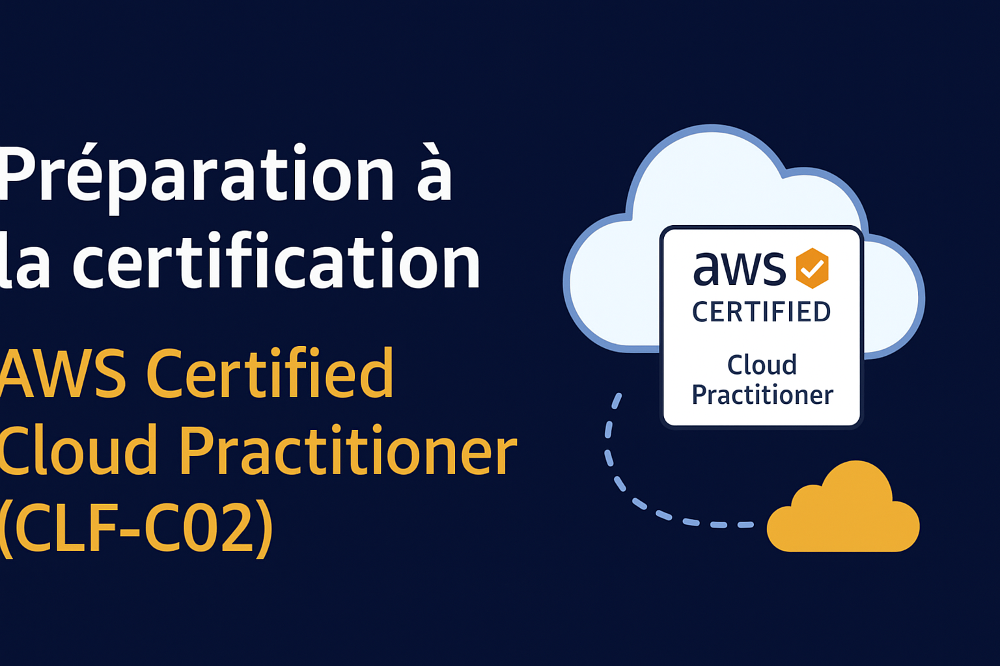
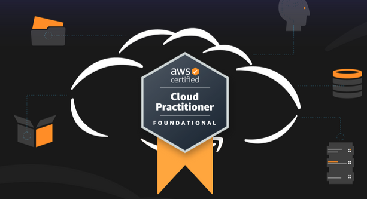
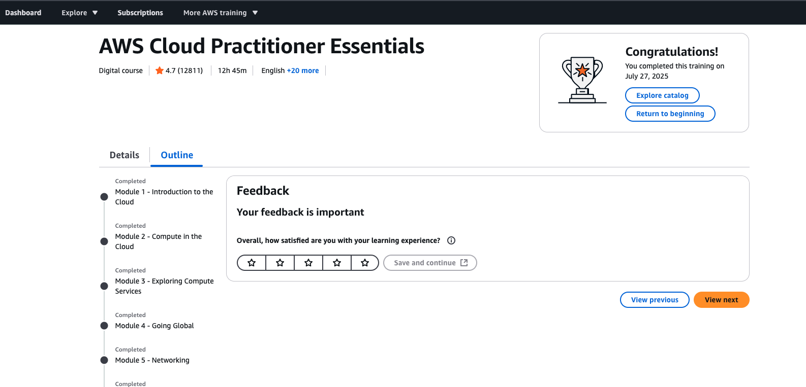
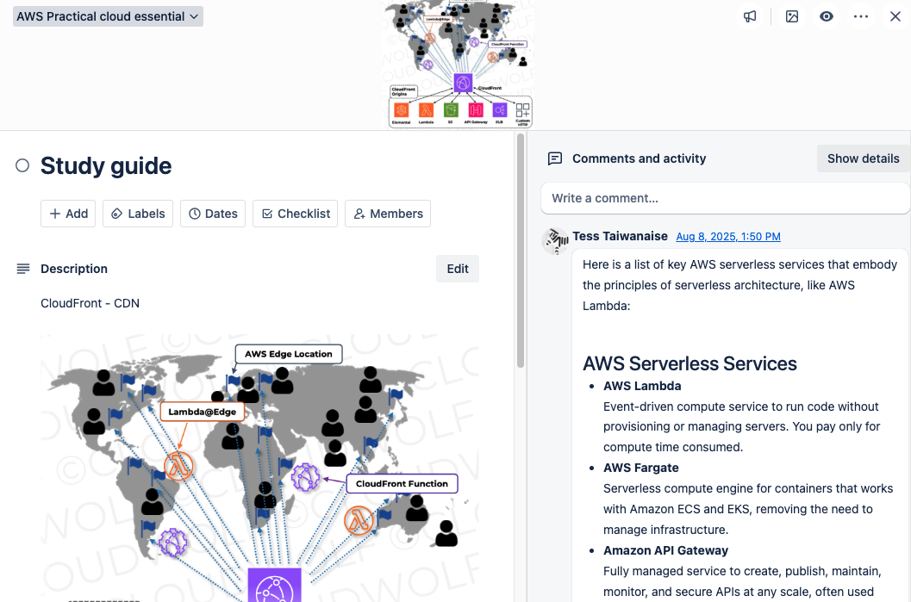
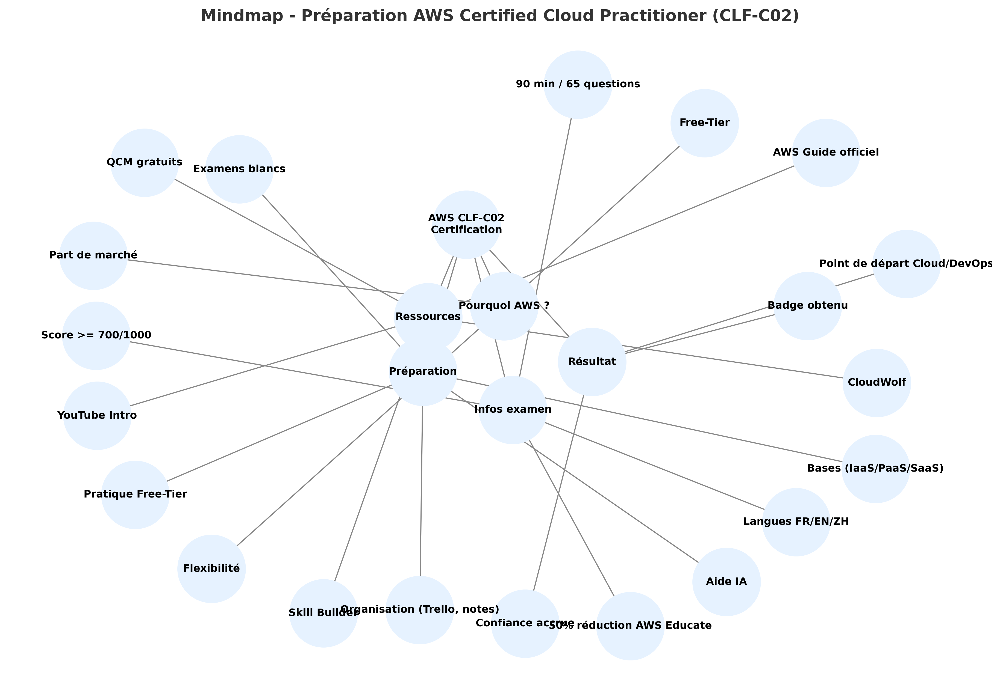

Préparation et retour d’expérience – AWS Certified Cloud Practitioner (CLF-C02)
28 Août 2025, 10:45 CEST
CloudGuide pratique pour réussir la certification AWS CLF-C02
En 2025, les outils d’IA et les infrastructures cloud font partie intégrante du quotidien professionnel. Qu’il s’agisse d’écrire du code, de déployer une application ou d’apprendre une nouvelle technologie, tout semble presque magique. Mais je me surprends souvent à être un « magicien qui lance des sorts sans comprendre les principes » — j’utilise les services sans toujours bien saisir les bases qui se cachent derrière.
Lorsque j’ai découvert le programme d’accompagnement AWS Educate, avec 50% de réduction pour l’examen (grâce à une invitation reçue via un groupe DevOps), j’ai sauté sur l’occasion. Cela me permettait de réviser les fondamentaux du cloud de manière structurée et de relever un défi de carrière. Plutôt que de commencer par une certification orientée IA, j’ai opté pour l’AWS Certified Cloud Practitioner (CLF-C02), une certification de base couvrant les concepts cloud, la tarification, la sécurité, la conformité et les services clés AWS. C’est une excellente porte d’entrée pour toute spécialisation future (DevOps, Cloud Architect ou ingénieur en sécurité).
J’ai eu moins d’un mois pour me préparer, soit environ trois semaines à temps plein. Avant de commencer, j’ai consulté différents blogs sur les meilleures pratiques d’apprentissage efficaces (*1).

Pourquoi AWS et pas Azure ou GCP ?
Beaucoup de collègues m’ont demandé : « Pourquoi AWS ? Pourquoi pas Azure ou GCP ? » Voici mes trois raisons principales :
- Plus de flexibilité : Contrairement à Azure et GCP, qui demandent souvent un compte entreprise ou un plan payant pour débloquer certaines fonctions, AWS permet une personnalisation granulaire au niveau de l’infrastructure (VPC, Security Groups, IAM Policies). Parfait pour pratiquer en profondeur.
- Part de marché dominante : Selon une étude de marché en France (2024) : AWS 48%, Azure 16%, GCP 8%. Avec une telle avance, AWS est le choix logique pour une trajectoire DevOps ou Cloud Engineering.
- Expérience Free-Tier plus sereine : AWS offre 12 mois gratuits (j’ai dépensé ~7$). Azure propose 3 mois gratuits, mais une facture de 121$ pour une application équivalente. GCP offre un crédit de 300$, mais une fois épuisé, j’ai reçu une facture de 183$. Chez AWS, le risque de coût est bien plus faible (*2).
Bref : AWS s’imposait naturellement.

Infos sur l’examen
Nom : AWS Certified Cloud Practitioner (CLF-C02) (*3)
Niveau : Fondamental
Durée : 90 minutes
Nombre de questions : 65 (QCM et multi-réponses)
Scores : 100–1000 points, seuil de réussite = 700 points
Prix : 100$ (–50% via AWS Educate = 50$)
Langue : Anglais
Domaines évalués :
- Concepts cloud – 24%
- Sécurité et conformité – 30%
- Technologies et services AWS – 34%
- Tarification et facturation – 12%
Expérience en conditions d’examen
Temps supplémentaire : Extension de +30 minutes possible si l’anglais n’est pas votre langue maternelle.
Identification : Présenter deux pièces officielles avec photo.
Environnement :
- En centre : Plus simple et tranquille.
- À domicile : Bureau totalement vide, pas de papiers, pas de deuxième écran. Installation de OnVue et test de l’environnement la veille.
Pendant l’examen : Format proche des simulations CloudWolf. Possibilité de revoir toutes les réponses avant envoi.
Résultats : Affichés immédiatement après validation, badge Credly reçu le lendemain.

Ma méthode de préparation
1. Consolider les concepts
Comprendre les modèles IaaS / PaaS / SaaS.
Maîtriser les avantages du cloud (élasticité, paiement à l’usage…).
Services clés AWS : EC2, S3, RDS, IAM, VPC, CloudFront.
Assimiler les modèles de facturation, TCO et Well-Architected Framework.
2. Pratique concrète (Hands-on)
Créer un compte Free-Tier et pratiquer.
Supprimer systématiquement les ressources pour éviter des coûts.
Exercices réseau : VPC, NAT Gateway, Security Groups, Internet Gateway, peering.
3. S’entraîner avec des examens blancs
AWS Skill Builder – examen officiel blanc.
CloudWolf simulations CLF-C02 – répéter jusqu’à avoir moins de 15% d’erreurs.
Ne pas apprendre « par cœur », mais comprendre pourquoi un service correspond à un cas concret.
4. Prendre des notes structurées
Utiliser Trello pour organiser les notions en arbres.
Révision active : se poser des questions à soi-même, demander des explications à une IA (comme ChatGPT ou Perplexity).
La veille : révision rapide, pas de cours longs.

Ressources recommandées
Officielles
- AWS Certified Cloud Practitioner Exam Guide (CLF-C02)
- AWS Skill Builder – Exam Prep CLF-C02
- Practice Questions officielles CLF-C02
Formations et vidéos
- Introduction aux services AWS (2025) – Chetan (*4)
- CloudWolf – Certified Cloud Practitioner (*5) : Garantie de remboursement si échec, nombreux labs pratiques en courtes vidéos, examens blancs détaillés.
Examens pratiques
- Exercices gratuits par Fabricio Félix (*6)
- Udemy – Practice Exams AWS CLF-C02 (payant, mais analyses très utiles).
Voici un schéma (mindmap) que vous pouvez utiliser pour illustrer votre préparation à la certification CLF-C02.

Conclusion
Coût total : Examen + cours + exercices = ~69,99$ (promo CloudWolf à 19,99$ + examen AWS 50$). Beaucoup plus rentable comparé à Azure (~99$ sans cours ni exercices) ou GCP (~125$ sans cours ni exercices).
Cette certification m’a permis de vraiment comprendre l’architecture AWS et les fondamentaux du cloud, au lieu de simplement « réciter » des services.
Pour ceux qui veulent entamer une carrière en cloud, DevOps ou IA/ML, la Cloud Practitioner est un point de départ idéal.
Références
Partagez cet article :